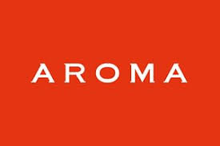

 Sr.System Administrator
Jan, 2014 | Jul, 2015 | Cairo, Egypt.
AROMA is an extraordinary company for media production in the middle east, it was my dream to work
there so I did moved once I got the opportunity for working as a Senior IT with a team of IT providing
24/7 coverage with level 2 crossover platform support Windows OS, Mac OSX, and Linux, Deploying apps
to Windows, and Mac OSX using PDQ, Deploy Studio, Level 1 support for SAN storages, mounting issues,
Render Farm implementation and maintenance, Data Wrangling, RAID, Monitor district server and data
backup processes, Kaspersky management console, VPN and Firewalls (Untangle).
An implemented Network for 170 Machine as RenderFarm with Server 2012, Mac Server, 3 NAS and
2 SAN using 3 different Operating Systems was a big challenge for me especially using the Terminal&
Powershell, also working on shifts added to me the ability to work independently and focus on detailed
work for extended periods of time, I spent there 1 year and 6 months cooperate with the team sending
them daily & monthly report.
Daily tasks, including:
- - Level 1 - 2 Support for all instance (on location, via phone & remotely)
- - Ensure pending tasks have been solved.
- - Check Kaspersky endpoint security management console and ensure there are no alerts
- - Check the Servers & Renderfarm room temperature
- - Performs other related duties as assigned